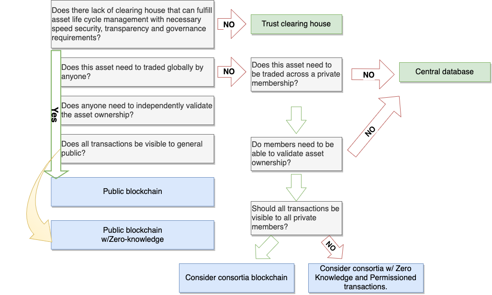

Objectives
- Explain difference between centralized and decentralized exchanges
- Create a simple token sale contract
- Implement a timelock mechanism in simple token sale contract
- Apply principles of tokeneconomics to the contract
Economics of Tokens

Defining token economics
- Tokenomics is a subset of crypto economics. It is the economics of crypto project/DApp.
- It considers 3 design variables
- Market Design
- Mechanism Design
- Token Design
Note : Well designed economics with rules and incentives, defines the long-term outcomes of cryptoprojects. Poorly designed ecosystems can lead to the collapse of the ecosystem.
At a high level
- Tokeneconmics involves
- Incentives of token system
- Properties of token system
- Tokeneconomics is NOT
- ❌STUDY
- ❌THEORY
- ❌CONCEPT
- ❌THESIS
Pillars fo tokenization

Market Design
- Tokeneconmics is also about environment i.e. Market
- When creating the environment, if you can nail : then users are more likely to use your system.
Market Design : Demand
- Generate Demand or increase thickness (size) of network by bringing all the relevant parties who want to transact together.Launching a ride-hailing business in the small rural city of 250 people is not a good idea.
Market Design : Congested
- Make sure to Decongest or reduce congestion in the network by having the system to help people make better choices. Launching a ride-hailing business in a big-city which has one main road with 2 lanes is not a good idea as vehicle will remain stuck in traffic.
Market Design : Safety
- Make it easy and safe for people to join. Fully autonomous coins, reduce information kept about the participants. Launching a ride-hailing business in mid-sized city that has considerable population plus roads with more lane, you realise that same city has tons of robbery; may jeoparadise the safety of drivers and passengers
Mechanism Design versus Game theory
- In the crypto space, we can incentivize people to behave in a right (rational) way. This can be done through game theory.
- Mechanism design is designing the game based on outcome (inverse of game theory)
- Influence the behavior of participant by rewarding good actions and punishing for bad actions
Mechanism Design
- In the Crypto Space we have got committees of people to vote on issues. When we reach consensus, the issue is resolved.
- Mechanism design affects the actions and behaviors of people in your network. This will affect the long-term sustainability of the project. Imagine if it is easy to bribe the president, the economy will not do well.
Mechanism Design
- Bribery can happen and it can be affected by
- Having a lot of people on the committee. So it is expensive to bribe. De-incentive
- Randomly allocate users to be on the committee, so you don’t know who to bribe. De-incentive
- To raise an issue to the committee of people, you have to put some tokens into the fund. If it turns out that you are a bad actor, you lose those tokens. Punishment
Mechanism Design Implementation
- Understand what the goal/objective of the system is. If this is a game, what is the goal of the game?
- Consider the information available, for participants to make an informed decision.
- What types of behaviors do you want to encourage?
- What can you do to incentivize it?
- How can you punish bad actors?
Mechanism Design Implementation : Price stability mechanism for MakerDAO
- Target rate feedback mechanism
- Sensitivity parameter
- Global settlement
Mechanism Design Implementation : Target rate feedback mechanism
- Stabilization mechanism that Maker token holders would have to activate in emergencies via the governance system.
- It autonomously adjust incentives both for Collateralized Debt Position (CDP) creation and for Dai holding, to bring the Dai market price closer to the target price by changing the target price.
Mechanism Design Implementation : Sensitivity parameter
- Token holders vote to determine trusted accounts
- They also vote to set a parameter that determines the maximum amount oracles can change the protocol’s internal estimates of market prices of Dai and collateral in a given amount of time
Mechanism Design Implementation : Global settlement Mechanism
- Global settlement is an emergency shut-down function that helps stabilize coin.
- It does so by freezing the Maker platform and stopping transactions.
Mechanism Design Factor : Monetary Policy
- How do you manage the system so that the peg remains the same and tokens are still valuable?
Mechanism Design Factor : Financial Policy
- financial policy is to understand how to create economic incentives to make sure the users carry out the right actions.
Governance Protocol
- They are the methods to ensure that the rules of the game are in place.
Stable coin mechanisms
- a cryptocurrency designed to trade at a fixed price
- Instead of a central bank affecting the value of money, the project has various ways for the coin to maintain a stable value, in comparison to another asset (e.g. USD)
- E.g. One cookie is worth one cup of milk. One day, all the cows die and there is a shortage of milk. How do you manage the system of cookie to milk exchange?
Auction/Payments
- Instead of a centralized system setting the payment price, you (the buyer) set your own price and compete with other buyers to receive the object.
- E.g. Miner receive little block reward and transaction fees after mining in beginning. So, more reward to mine on the network. MORE transactions as network grows. So, block rewards reduce and transaction fees increase.
Voting
- Instead of a centralized system making decisions and changes, you (the token holder) can vote on issues and take ownership of the changes.
Oracle
- A blockchain cannot access data outside of its state (e.g. ETHUSD price, the weather today etc.)
- Instead of a centralized entity giving input/answers to the system, you (the network participant) can add information into the oracle to be evaluated.
Token curated registries
- Instead of having a centralized entity like Buzzfeed to rank “best cheesecake in Philly”, you (the voter) can curate the decentralized list.
- For e.g Scoring DeFi pools. (https://app.defiscore.io/assets/dai)
Token Design
- Token design is everything that involves the token, for example, how are the tokens used to incentivize specific behavior, total supply, and token governance.
- Architecture
- Incentive
- Token structure
Token Design (punch)
The unique thing about token ecosystem is that everything is decentralized. That means many of the token design “rules” has to be coded or embedded into the system.
While designing token ask yourself
While designing token ask yourself
- What is the true purpose of a token?
- Why do you need a decentralized network for your product/project?
- What incentives are you giving to the users?
- What is the ideal token design structure you’d like? (e.g. inflation rate, allocation, distribution schemes, total supply,)
- Are you pegging your token valuation to a real currency? What is the possible limitation to that?(may not be applicable)
Token use case
- A token can realize data such as
- Identity documents
- Voting records
- Contracts
- Game characters
- Stock ownership
- Usage rights (such as a software license or computing services)
Crowd Sales
- Air Drops
- ICOs
- IEOs
- IDOs
Air Drops
Airdrops is a process by which the company distributes its tokens to wallets of certain user, completely free of charge.

Types of Air Drop
- Standard Airdrop
- Bounty Airdrop
- Holder Airdrop
- Hardfork Airdrop
- Exclusive Airdrop
How ICO works

Launching own ICO

Decentralized Exchange
- In most exchanges, only the asset exchange is decentralized, as the assets are cryptocurrencies deployed on the blockchain that no central entity controls.
Decentralized Exchange
- Due to KYC and AML regulations, exchanges are often required to seek users’ identities for capital deposits, creating centralized record-collection and data-storage of personal information. Centralized exchanges give users permission to transact currencies, rather than creating a permissionless ecosystem.
Why NOT Centralized Exchange?
- Unreliable and untrustworthy
- Modern financial system, this transgressions happen to quickly
- Compromised CEX may put millions of users’ fund at risk at a given time.
- Multiple people have access to customer’s fund. “Three can keep a secret if two are dead”.
Why NOT Centralized Exchange?
- High-frequency trading, front running or hidden orders
- May need to go physically close to exchanges as trading bots make decisions so quickly.
- Fractional[frictional] reserve banking
- “Big brother is watching”
Decentralized exchange merits
- Any attack or failure impacts only one user and their funds.
- User has control over their own security
- Hacking and individual user or exchange occurs at fixed cost.
Decentralized exchange merits
- Level playing field to traders
- Spin up your own exchange by running an API node locally - location-neutral
- A user may keep more than one account and there is no way of tying transactions done through different account to your identity hencing it gives false sense of privacy.
Game Theory
- Game theory is basically strategic decision making. You look at the options, consider the outcomes to the solutions and make the best decision.
Game Theory
- Imagine there is a sealed cookie jar at home. Mum says that no one can eat the cookie. You and your sister both wants the cookie. What options are there?
- You and sister both get the cookies.
- You get the cookie.
- Your sister gets the cookie.
- No one gets the cookie.
Game Theory
- What will happen next?
- Both gets the cookie. Mum doesn’t find out because no one tells her.
- Only you get the cookie. Sister tells mum about your bad behaviour. You gets punished.
- Only sister gets the cookie. So you tell mum about her bad behaviour. She get punished.
- No one gets the cookie. Nothing happens. You get hungry.
- Which option will you choose?
Time lock Contracts
- Allow users to lock up their tokens.
- Tokens can be released again after specified amount of time before a user who has decided to unlock his tokens actually receives them back (cliff vesting).
- The contract can be used for any token that follows the common token standard and the same instance can be used by an arbitrary number of users